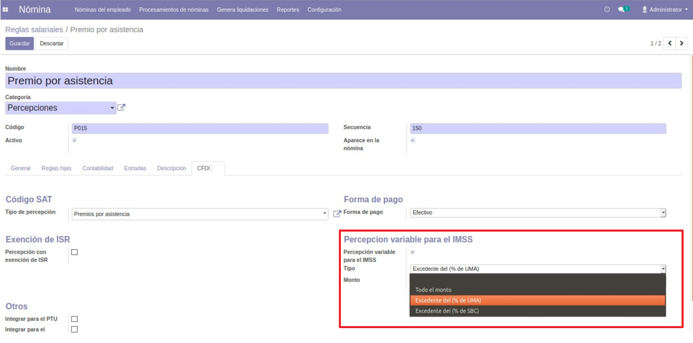
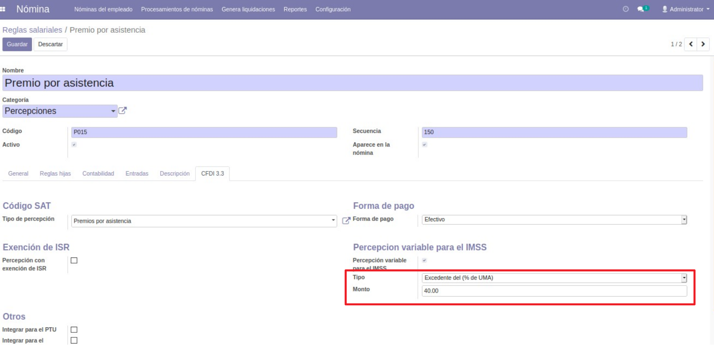
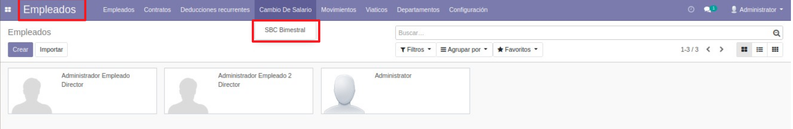
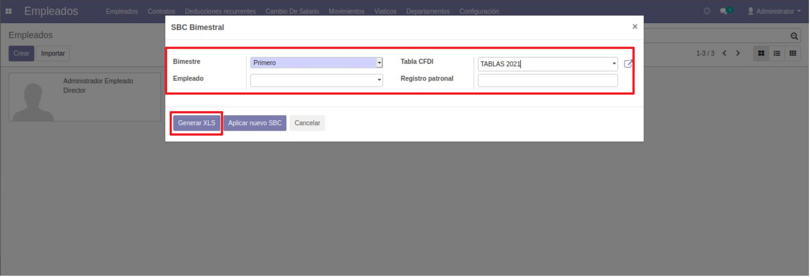
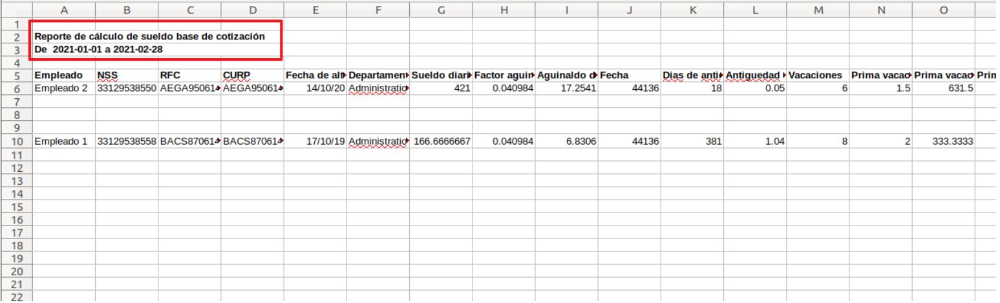
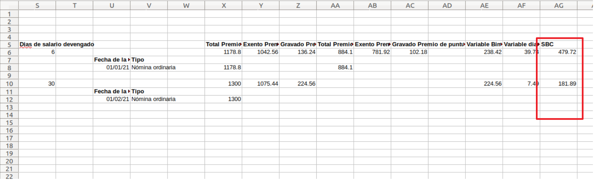
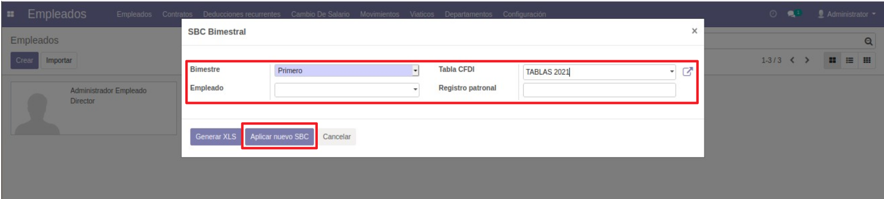

Calculo de sueldo base de cotización variable
En el Módulo de Nómina → Configuración → Reglas Salariales, configurar en cada Regla Salarial su parte variable para el IMSS.

- Seleccionar el tipo de Exención y su Monto o Porcentaje.

- Para Generar el Reporte o Aplicar el Nuevo SBC, ir al Módulo de Empleados → Cambio de Salario → SBC Bimestral.

- Al abrir el Wizard seleccionar el Periodo a sacar (Bimestre) y con la Tabla CFDI seleccionar el Año.
Adicionalmente se puede filtrar por Empleado o Registro Patronal.

- Al hacer clic en Generar XLS se exportará un reporte en Excel para revisar los cálculos hechos en el
sistema, está primero la Parte Fija y posteriormente la Parte Variable (con desglose por Nómina y parte
Exenta y Variable).

- Al final se muestra el monto calculado de SBC.

- Una vez confirmado los cálculos abrir nuevamente en Wizard, seleccionar el Periodo y Año y dar clic
en Aplicar nuevo SBC.

- Al dar clic en Aplicar nuevo SBC se van a generar múltiples registros de Incidencias con el tipo cambio de salario,
se pueden revisar y posteriormente confirmar para aplicar los cambios de sueldo en los contratos de los Empleados.
Este manual es una guía básica de las funcionalidades estándar del módulo. Para recibir asesoría
sobre sus dudas adicionales o una capacitación detallada, puede contratar consultoría.